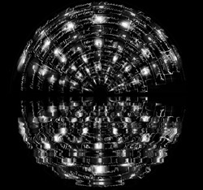
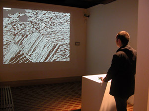

|
| |
We are pleased to present:
evening
talks with new media artists
spring 2006
::::::::::::::::::::::::::::::::::::::::::::::::::::::::::::::::::::::::::::::
please join
us! these events are free and open to the public
Rm
313, 163 William Street, Pace University, NYC
co-directors Jillian Mcdonald + Francis T Marchese digitalgallery@pace.edu
:: click for map
and directions :: click for printable pdf
::::::::::::::::::::::::::::::::::::::::::::::::::::::::::::::::::::::::::::::
6:30pm.
tuesday mar 28 :: luke
murphy + marcin ramocki
::::::::::::::::::::::::::::::::::::::::::::::::::::::::::::::::::::::::::::::
in
conjunction with the exhibition:
mar
2 - mar 30 :: luke murphy, "the 12th gate,
reflected"
opening
6 - 8pm, tuesday mar 7
::::::::::::::::::::::::::::::::::::::::::::::::::::::::::::::::::::::::::::::
other upcoming events
apr 7 - 29 :: juried student show - in conjunction
with peter
fingestin gallery
opening
3:30 - 5:00, tuesday apr 11
::::::::::::::::::::::::::::::::::::::::::::::::::::::::::::::::::::::::::::::
luke
murphy
links::
www.lukelab.com
artist's
site

image:
The 12th Gate, Reflected
bio :: Rev. Luke Murphy is an information-based artist whose work is united by common themes drawn from the impossible task of quantifying the elements of the psyche and spirit. He has a particular interest in the Gnostic gospels, Masonic ritual, religious paintings and digital languages - in effect, codes. Amorphous concepts are dissected and reassembled using the architecture of professional jargon and presentation techniques. Murphy's incessant need to organize ostensibly promises the viewer the hope of discovering a pattern or the key to the code and ultimately a shorter route to meaning, understanding and mastery of complex situations and emotions. This attempt to draw the connections within amorphous subjects, which in theory should soothe the viewer by simplifying the complex, instead reveals more layers of anxiety. The work's failure to deliver what they ostensibly promise is at once menacing and reassuring.
statement :: Rev. Luke Murphy was born in 1963 in Boston, MA. He graduated with and MFA from SUNY Purchase after completing his BFA from the Nova Scotia College of Art and Design and a BS from the University of Toronto. He is the co-director of cabinetmagazine.org and Vice President of Web Development at MTV Network.
Luke Murphy's talk will accompany his installation, "The 12th Gate, Reflected" at Pace Digital Gallery. See above for dates.
::::::::::::::::::::::::::::::::::::::::::::::::::::::::::::::::::::::::::::::
marcin
ramocki
links::
www.ramocki.net artist's
site • www.vertexList.net
vertexList
Gallery

image:
History
statement::
"The
last 5 years of my artistic research were rooted in development of simple video,
sound and animation based softwares. I am interested in computer as a source
of non-linearity, either generative/random or interactive. That capacity enables
me as an artist to challenge the narrative semiotics and introduce a new, object
based one. I am using the word “object” in it’s programming
connotation, as a virtual entity requiring certain protocol to express itself
and reveal the metaphor contained in the software. I am not using it as an antithesis
of “subject”. The environments I create have rules of engagement,
but not a story. My interest is specifically in building metaphors through software.
I consider myself a non-modernist. I no longer feel obliged to delineate the
borders of my genre, experiment for the sake of experimentation or escape the
authorship of my work. I take the full responsibility for establishing the rules
of engagement with my software, the micro-universe with its “objects”
and their “rules of conduct”. My earlier pieces (“Virtual
Singer”, “Japanatious”, “Desperately Trying to Tell
the Time”) are random generators based in video material, which through
random-seed application attempt portraying existential conditions. Later pieces
(“Tuesday Morning”, “Flux”, “History”) involve
user interaction and more complex models illustrating my philosophical investigations."
bio::
Marcin
Ramocki was born in 1972 in Krakow, Poland. He received his BA from Dartmouth
College and MFA from the University of Pennsylvania. He began working with digital
media in 1996 and since exhibited both in gallery environment and online. Currently
Marcin lives and works in Williamsburg, Brooklyn and teaches Digital Media at
Jersey City University. He is also a founder and curator of vertexList art space
in Brooklyn.


 Fine Arts
Department
Fine Arts
Department